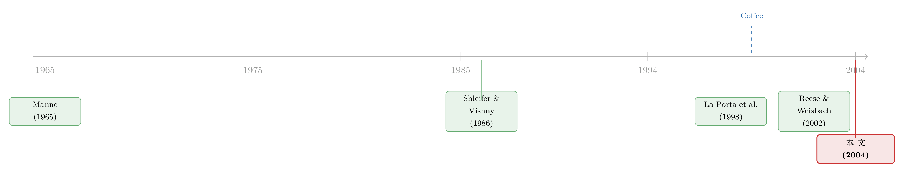

并购的版图，画在一国的法律里
本文读的是 Rossi & Volpin (2004, Journal of Financial Economics)：用 49 个国家、近 4.6 万笔并购，作者发现一个国家的并购市场有多活跃，几乎可以由它的会计准则与股东保护「预言」出来；而跨境并购里有一条隐秘的方向——被买的公司，往往来自投资者保护更差的国家。换句话说，并购不只是企业层面的买卖，它还是全球公司治理悄悄趋同的一条暗线。
1 一个被忽略的问题
我们对并购（mergers and acquisitions, M&A）大概都不陌生。某家公司出价买下另一家，股价跳一下，财经版面热闹两天，然后归于平静。金融学里关于并购的文献多如牛毛，但它们几乎都在问同一类问题：这桩交易对买卖双方的股东值不值？溢价合不合理？协同效应是真是假？
然而，如果你把镜头拉得足够远，从一家公司退到一个国家，会冒出一个几乎从没被认真问过的问题：
为什么有的国家并购如此频繁，有的国家却几乎没有并购？
这个差异大到惊人。在美国，整个 1990 年代有 65.6% 的上市公司在某笔已完成的交易里成了被收购方（target）；而在日本，这个数字只有 6.4%。法国、意大利、英国的并购强度差不多，但它们的治理体制其实天差地别。世界平均水平是 23.54%。控制权（control over corporate assets）在不同国家的「换手率」，相差能有十倍。
这就是 Rossi 和 Volpin 这篇 2004 年发表在 JFE 上的论文的出发点。他们想说的是：一个国家有多容易把公司从一个老板手里转移到另一个老板手里，不是偶然，而是由这个国家的法律与监管环境决定的。
2 把「市场」当成因变量
要回答这个问题，第一步是承认并购市场本身是一个因变量，是制度的产物，而不是给定的。
并购的本质是什么？是把公司资产重新配置到「更好的用途」上去——这是 Manne (1965) 半个多世纪前就讲清楚的「公司控制权市场」（market for corporate control）的核心。但现实里有摩擦：交易成本、信息不对称、代理冲突。这些摩擦越大，本该发生的控制权转移就越发生不了。
而恰恰是 La Porta 等人（1997, 1998）开创的「法与金融」（law and finance）这条线告诉我们：一国的法律质量，正是这些摩擦大小的代理变量。法律保护得好，外部投资者愿意掏钱，股市发达，资本便宜；法律保护得差，大股东攥着控制权不放、忙着自我堑壕（entrenchment），市场就僵住了。
于是一个自然的猜想就出来了：投资者保护越好的国家，并购市场越活跃。
作者用三把尺子来量「投资者保护」，全部来自 La Porta et al. (1998)：
- 会计准则（accounting standards）：一国年报对 90 个披露项目的覆盖打分，满分 90。披露好，潜在标的才能被「看见」。
- 股东保护（shareholder protection）：把反董事权利指数（antidirector rights）乘以法治指数（rule of law）再除以 10，取值 0 到 6。它衡量小股东对管理层的有效约束力。
- 普通法（common law）虚拟变量：法律渊源是英国普通法记 1，否则 0。普通法国家通常更保护小股东，而且它真正外生——所以是个不错的工具变量。
3 识别策略：一组朴素却有说服力的回归
这篇论文的实证设计并不花哨，它没有断点、没有工具变量两阶段的炫技，但它的说服力来自层层加控制变量后系数依然稳健。理解这一点，比记住任何一个数字都重要。
核心设定是一个国家层面的回归：
$$ \text{Volume} = a + b\,X + g\,\text{investor protection} + e $$
其中因变量 volume 就是「上市公司里成为成功并购标的的百分比」。控制变量 \(X\) 在所有设定里都包含 GDP 增长率（代理经济景气变化）和 1995 年人均 GNP 的对数（代理国家财富）。因为因变量被构造在 0 到 100 之间，作者用的是 Tobit 模型，最大似然估计。
结果干净利落。普通法国家的并购频率比大陆法国家高出 7.5 个百分点。会计准则每提高 12 分（相当于从意大利的披露质量升到加拿大），并购量增加约 5%。股东保护每上升 1 分（比如比利时引入邮寄投票），并购量多 4%。三把尺子，指向同一个结论：投资者保护越好，并购越多。
但真正关键的一步，藏在把两个变量放进同一个回归之后。
在第 4 列里，作者同时放入会计准则和股东保护，发现只有会计准则显著。这是个微妙的信号：对并购而言，「能不能看清楚一家公司」（披露），比「小股东有多大权力」（投票权），更要紧。
接着，一个更漂亮的反转出现在第 5 列。作者加入了所有权集中度（ownership concentration，前三大股东在十大非金融公司里的平均持股）。神奇的是，股东保护的系数又显著了，而且所有权集中度自己也显著为正。
这其实解开了第 4 列那个「股东保护怎么不显著了」的谜。股东保护对并购有两股相反的力：一方面它降低融资成本、利于并购；另一方面它压低了所有权集中度，而股权越分散，友好的控制权转移反而越难——这正是 Shleifer 和 Vishny (1986) 说的「自由搭便车问题」（free-rider problem），股权集中才好谈。控制住所有权集中度，这两股力才被拆开，股东保护的「正效应」才浮出水面。
这是这篇论文方法论上最值得学的地方：当一个变量在简单回归里不显著，先别急着下结论说「没关系」。它可能同时通过两条相反的渠道在起作用，被自己抵消了。只有把中介变量（这里是所有权集中度）显式控制进来，才能把净效应看清楚。
第 6 列是稳健性的总检验：加入强制要约收购规则（mandatory bid rule）、市场回报、产品市场集中度等一堆监管与经济环境变量后，普通法的系数几乎纹丝不动，而那些新加的控制变量没有一个显著。投资者保护的解释力，扛住了。
4 敌意收购：好保护，反而更容易「被掀桌」
并购里有一类特别的存在——敌意收购（hostile takeover）。许多金融经济学家（Manne, 1965；Jensen, 1993；Franks and Mayer, 1996）相信它扮演着关键的治理角色：它是悬在不称职管理层头上的一把剑。
作者用同样的框架估计：
$$ \text{Hostile takeover} = a + b\,X + g\,\text{investor protection} + e $$
这里 hostile takeover 是「1990 年代尝试过的敌意收购数占本国上市公司数的百分比」。注意，作者用的是尝试而非成功的敌意收购——因为哪怕失败的敌意收购，对管理层的威慑也实实在在。
结果同样指向投资者保护：普通法的系数是 1.53，股东保护是 0.88，都在 1%–5% 显著。换句话说，股东保护越好的国家，敌意收购反而越多。
这听起来有点反直觉——保护小股东，怎么会让公司更容易被「掀桌」？作者给的解释很精彩：好的小股东保护降低了控制权私利（private benefits of control），于是控制权变得更可争夺（contestable）。老板捞不到太多油水，自然也就更难、更没动力把自己堑壕起来。顺带一提，在全样本里敌意收购极其罕见——49 个国家里有 21 个干脆为零，最高的美国也只有 6.44%。
5 真正的反转：跨境并购是一条「治理趋同」的暗线
如果文章到这里就结束，它只是一篇扎实但不惊艳的「制度决定并购量」的论文。真正让它脱颖而出的，是后半段对跨境并购（cross-border M&A）的分析。
先看一个事实：样本里 25% 的并购是跨境的，共 11,638 笔。不同国家在跨境市场里的角色截然不同——墨西哥的交易里有 51% 的收购方是外国人，而美国只有 9.1%。
然后，作者问了一个方向性的问题：当一笔交易是跨境的，被买的那一方，通常来自投资者保护更好还是更差的国家？
答案是——更差的。即便控制了双边贸易、相对人均 GNP、文化与地理差异，结果依然稳健：跨境并购里，标的国的投资者保护系统性地低于收购方国家。一笔交易是「跨境」而非「境内」的概率，随着标的国投资者保护的提高而下降。
这个发现的含义是深远的。它意味着：把自己卖给一家来自「更讲规矩」国家的公司，本身就是一种治理升级。被收购的公司，连同它的小股东，等于搬进了一个投资者保护更好的法律环境里。这正是 Coffee (1999) 所说的全球公司治理趋同——只不过它不是靠立法者坐下来谈出来的，而是靠一笔笔并购自下而上地实现的。
这和「绑定假说」（bonding hypothesis）是一个硬币的两面。Pagano 等人（2002）、Reese 和 Weisbach（2002）早就发现，弱保护国家的公司更愿意去强保护的国家交叉上市（cross-listing），主动给自己套上更严的约束。而本文说的是：弱保护国家的公司，也更常被强保护国家的买家买走。卖身，和把股票挂到纽约，是同一种「契约式趋同」的不同形态。（关于「租来的法律」到底管不管用，可参见《租来的法律：把股票挂到纽约，真能管住自家的老板吗？》；关于跨境上市的另一面动机，可参见《把股票挂到国外去，竟是一道防收购的「护城河」》。）
6 价格里的另一半故事：溢价与支付方式
并购市场不只有「量」，还有「价」与「怎么付」。作者用 4,007 笔来自 35 国的交易级数据，又往前走了一步。
溢价（premium）定义为「报价相对公告前四周收盘价的百分比」。作者发现，溢价在股东保护更高的国家更高——但这个结果主要由美国和英国标的驱动，所以要谨慎对待。
更有意思的是支付方式。作者用一个「是否全现金支付」（all-cash bid）的虚拟变量来刻画，发现：全现金报价的概率，随收购方国家的股东保护提高而下降。 反过来说，用股票支付，需要一个高股东保护的环境。
这个逻辑其实很顺：用股票付账，等于让被收购方的股东变成你的股东。如果你这个国家对小股东保护很差，对方凭什么愿意接你的股票？于是只能掏现金。意大利的并购里有 88% 是全现金，而美国只有 37%——这组对比把这条逻辑诠释得淋漓尽致。
7 文献脉络
把这篇论文放回它所在的谱系，故事会更清楚。
最早的源头是 Manne (1965)，他第一个提出「公司控制权市场」——并购不是简单的扩张，而是一种纪律机制。接着 Grossman 和 Hart (1980)、Shleifer 和 Vishny (1986) 从理论上刻画了收购里的搭便车问题与大股东的作用：股权太分散，谁都不愿出力去监督或收购，于是集中的所有权反而成了控制权转移的润滑剂。
真正的转折发生在 1990 年代末。La Porta、Lopez-de-Silanes、Shleifer 和 Vishny 的一系列论文（1997, 1998）开创了「法与金融」范式，把法律渊源、股东权利、法治这些制度变量量化，并证明它们与股市发达程度、所有权结构、资本成本系统相关。Coffee (1999) 则提出了治理趋同的前瞻判断。Pagano 等（2002）与 Reese、Weisbach（2002）把绑定假说做实，证明弱保护国家的公司更爱去强保护国家上市。

Rossi 和 Volpin (2004) 站在这条线的交汇点上：它把「法与金融」的制度变量，第一次系统地用来解释并购市场本身的强度与跨境流向，并指出跨境并购是治理趋同的一条独立渠道。它不是范式的开创者，但它是把两个范式——控制权市场与法与金融——焊在一起的那个接头。
8 评论与延伸（Q&A + 研究方向）
(a) 几个可能的疑问
Q：volume 这个因变量，会不会只是反映了「美英 SDC 覆盖更好」的数据偏差，而不是真实的并购活跃度？
这是最该担心的内生性来源，作者自己也承认。SDC Platinum 对美英的覆盖确实更广，对小国的覆盖还会随时间改善。作者的应对是：把分析在「1990 年代后半段」的子样本上重做一遍，结果相似；同时换了好几种 volume 的度量（按人口、按 GDP、按市值），定性结论不变。但这并不能完全洗掉数据质量与制度质量同向相关的隐忧——发达、普通法、并购多的国家，往往也是数据好的国家。
Q：普通法虚拟变量被当成「工具变量」，这个外生性站得住吗？
作者的论证是：法律渊源在数百年前就由殖民史决定，对今天的并购没有直接影响，却与各种投资者保护代理变量高度相关，因此是个「真正外生」的工具。逻辑上不算牵强，但排他性约束（exclusion restriction）始终是不可检验的——普通法可能通过语言、与英美的贸易联系、金融市场结构等许多别的渠道影响并购，而不止通过投资者保护。所以最好把它读成一个稳健的相关性证据，而非严格的因果识别。
Q：跨境并购里「标的来自弱保护国」，会不会只是因为弱保护国普遍更穷、更小，资产更便宜？
作者控制了相对人均 GNP、双边贸易、文化与地理距离后结论依然成立，这削弱了「单纯因为便宜」的解释。但「投资者保护」与「经济发展水平」高度共线，要把治理趋同的故事和单纯的「富国买穷国」彻底分开，仍然很难。这是这条结论最脆弱的地方。
Q：股东保护越好、敌意收购越多——这难道不该反过来吗？好的保护不是该让公司更安全吗？
关键在于区分「保护小股东」和「保护在任管理层」。好的小股东保护压低了控制权私利，让老板没那么多油水可捞，于是更难、也更没必要把自己堑壕起来，控制权因此更可争夺。它保护的是小股东，恰恰不保护想赖着不走的管理层。
Q：第 4 列里股东保护不显著、第 5 列又显著，这种「加个变量就翻盘」的结果，可信吗？
这正是文章设计精巧之处而非数据挖掘。作者给出了清晰的经济机制：股东保护通过两条相反渠道作用——降低融资成本（利于并购）、压低所有权集中度（不利于友好转让）。不控制所有权集中度时两者相消，控制后净效应显现。系数翻盘有先验的理论预测兜底，不是事后凑出来的。
Q：这篇 2004 年的论文，结论在今天还成立吗？
二十年来跨境并购的体量、监管（各国反垄断与外资审查）、以及新兴市场的崛起都变了很多。论文的横截面相关性大概率仍在，但「跨境并购推动治理趋同」这个动态命题，值得用更长的面板、更现代的交错 DiD 方法重新检验——尤其要小心 staggered DiD 的已知陷阱（可参见《当「更稳健」的设计悄悄把符号弄反了——重读交错双重差分》）。
(b) 几个可能的研究问题与提案
1. 跨境并购后，标的公司的治理与债券利差真的改善了吗？
【经济故事】本文的核心命题是「被强保护国买走 = 治理升级」，但这停在横截面的方向性证据上。如果真有治理升级，被收购公司的小股东折价应缩小、信用利差应下降。把视角放到公司债上尤其干净：治理改善降低道德风险，债权人应能看到更低的发行利差。 【可行性】中。需要把跨境并购事件（SDC / Refinitiv）与标的的债券二级市场利差（TRACE 只覆盖美国，跨境要用 Bloomberg / 各国数据）匹配，做事件研究或 DiD。难点在于跨境债券数据的覆盖与可比性，以及收购选择的内生性。
2. 外资收购方是「蝗虫」还是「治理输入者」？
【经济故事】本文把跨境收购方刻画成治理的正向输入者，但流行的政治叙事正相反——把外资买家说成只想榨干本地公司的「蝗虫」。这两种叙事可以被同一套数据检验：收购后标的的就业、研发、长期投资到底走向何方？ 【可行性】高。已有文献正面交锋过这个问题（可参见《外资真是「蝗虫」吗？——一次跨 30 国的长期投资体检》）。可在其框架上叠加「收购方—标的国投资者保护落差」这一维度，看治理落差越大、改善是否越明显。
3. 投资者保护落差，能预测跨境并购的「支付方式」吗？
【经济故事】本文证明全现金支付概率随收购方股东保护下降。一个自然的延伸是：当收购方来自强保护国、标的来自弱保护国时，用股票支付应当更常见——因为强保护国的股票更值得被对方接受。支付方式因此成了治理趋同的另一个可观测指标。 【可行性】高。交易级数据（SDC 的 all-cash dummy + 双边制度变量）已经够用，本文数据结构稍作扩展即可，是个低成本、可立即上手的题目。
4. 跨境并购作为「绑定」与交叉上市作为「绑定」，哪条渠道更有效？
【经济故事】卖身和交叉上市是同一种契约式趋同的两种形态。但它们的约束力可能差很多：交叉上市后老板还在，卖身则直接换了控制人。哪种方式带来的治理改善更真实、更持久？ 【可行性】中。需要把同一批弱保护国公司的两类事件（赴美上市 vs. 被强保护国收购）放在一起比较治理与估值结果，识别上要处理「自选择进入哪条路径」的问题，建议用倾向得分匹配或工具变量。
9 我的判断
这篇论文的贡献不在于某个惊人的系数，而在于视角的转换：它第一个把「并购市场的活跃度与方向」当成一国制度的产物来系统研究，并且发现跨境并购暗藏着一条治理趋同的方向性力量。在「法与金融」这条已经被 La Porta 等人反复犁过的田里，它找到了一块没人认真种过的地。
对识别的担忧也很实在。全文几乎都是横截面相关性，普通法当工具变量的排他性不可检验，volume 的数据质量与制度质量同向相关，跨境结论里「治理趋同」和「富国买穷国」难以彻底分离。作者用子样本、多种度量、层层加控制做了诚实的稳健性努力，但这终究是一篇给出强相关证据、而非干净因果的论文——这一点读者要心里有数。
我想看到的后续，是把这条横截面命题动态化：用今天更长的跨境并购面板、更现代的因果方法，去检验「被强保护国买走的公司，治理与融资成本是否真的、持久地改善了」。如果这条暗线是真的，那它对今天的公司债与信用市场研究尤其有意思——治理趋同最终该兑现在债权人愿意接受的那个利差里。
参考文献
Coffee, J. (1999). The future as history: The prospects for global convergence in corporate governance and its implications. Northwestern University Law Review 93, 641–708.
Franks, J., Mayer, C. (1996). Hostile takeovers and the correction of managerial failure. Journal of Financial Economics 40, 163–181.
Grossman, S., Hart, O. (1980). Takeover bids, the free-rider problem and the theory of the corporation. Bell Journal of Economics 11, 42–64.
Jensen, M. (1993). The modern industrial revolution, exit, and the failure of internal control systems. Journal of Finance 48, 831–880.
La Porta, R., Lopez-de-Silanes, F., Shleifer, A., Vishny, R. (1997). Legal determinants of external finance. Journal of Finance 52, 1131–1150.
La Porta, R., Lopez-de-Silanes, F., Shleifer, A., Vishny, R. (1998). Law and finance. Journal of Political Economy 106, 1113–1155.
Manne, H. (1965). Mergers and the market for corporate control. Journal of Political Economy 73, 110–126.
Pagano, M., Roell, A., Zechner, J. (2002). The geography of equity listing: Why do companies list abroad? Journal of Finance 57, 2651–2694.
Reese, W., Weisbach, M. (2002). Protection of minority shareholder interests, cross-listings in the United States, and subsequent equity offerings. Journal of Financial Economics 66, 65–104.
Rossi, S., Volpin, P.F. (2004). Cross-country determinants of mergers and acquisitions. Journal of Financial Economics 74(2), 277–304.
Shleifer, A., Vishny, R. (1986). Large shareholders and corporate control. Journal of Political Economy 94, 461–488.